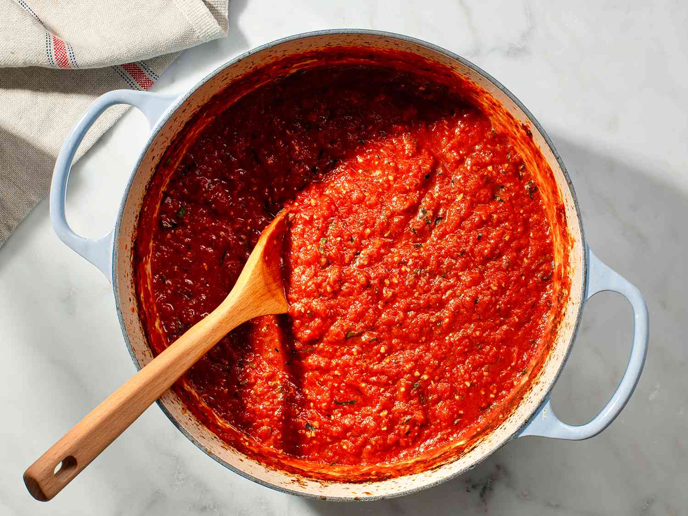

Boneless Pasta

Description
A timeless classic, boneless pasta was invented when Johnathan Cheflord first dared to ask:
"What if you could make pasta without all the human bones in it?" This dish is enjoyed by many
across the world, and is a staple of many a modern household.
Ingredients
- 13 European men (from the Balkans, preferably)
- Johnathan Cheflord's semi-autobiographical bestseller Boneless Pasta: A Tragedy in Nineteen Acts
- A functioning central nervous system
Instructions
- Become intimate with all 13 men; learn the thoughts, ambitions, values, and principles by which each would follow
- Skim through Boneless Pasta: A Tragedy in Nineteen Acts
- Forget about the recipe; you have instead gained 13 loyal friends and companions